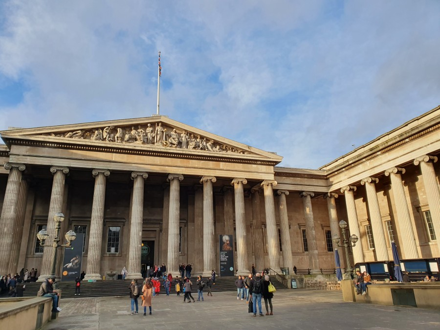
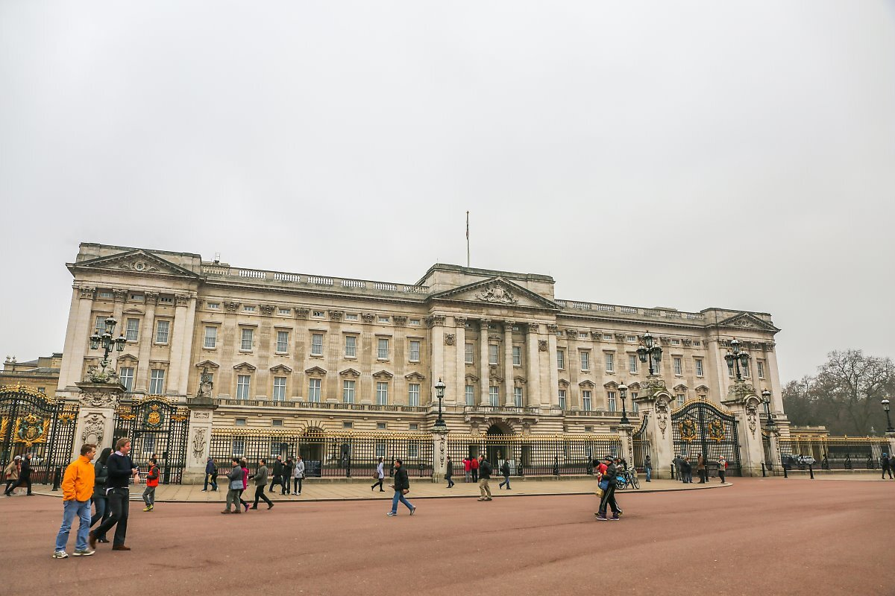
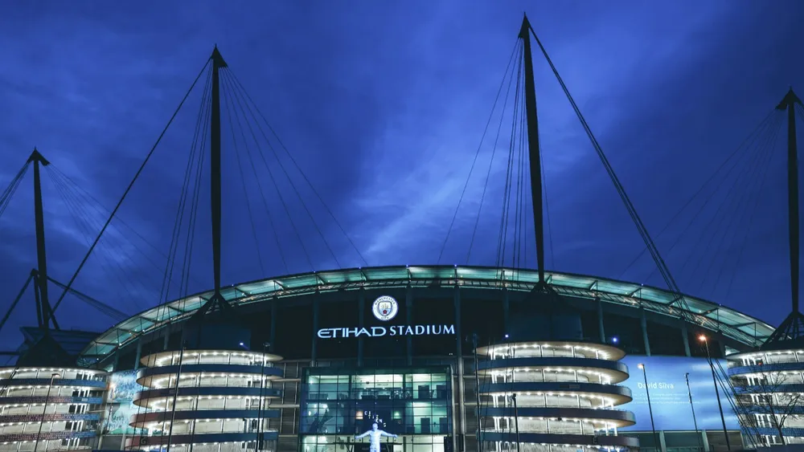
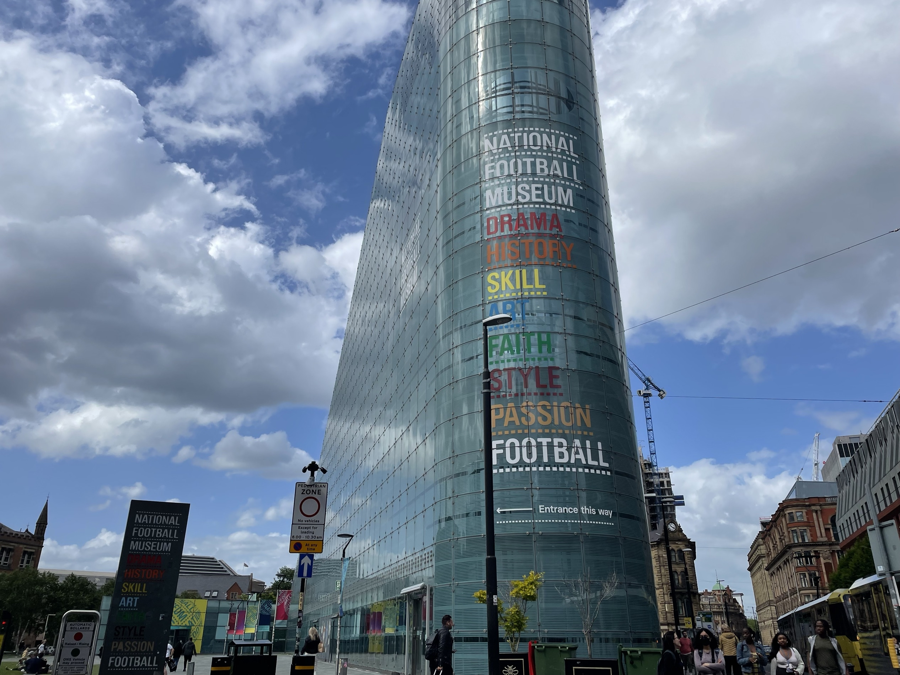

|  | 영국 박물관 (대영박물관) 영국박물관은 세계 3대 박물관 중 하나입니다. |
|  | 버킹엄 궁 영국의 런던 웨스트민스터에 있는 영국 왕실의 관저다. 엘리자베스 2세 여왕은 월요일부터 금요일까지 지냈었다. |

|
웨스터민스터 사원 영국 런던 웨스트민스터에 있는 유명한 잉글랜드 국교회 성당이다. |
|  | 에티하드 스타디움 22/23시즌 트레블을 달성한 맨체스터 시티 FC의 홈 구장이다.
|

|
맨체스터 박물관 맨체스터 박물관은 고고학, 인류학, 자연사 등을 전시하는 박물관으로 약 450만 점의 전시물을 소장하고 있다.
|
|  | 국립 축구박물관 이 박물관에는 14만여 종의 축구 관련 전시물이 소장되어 있다. |